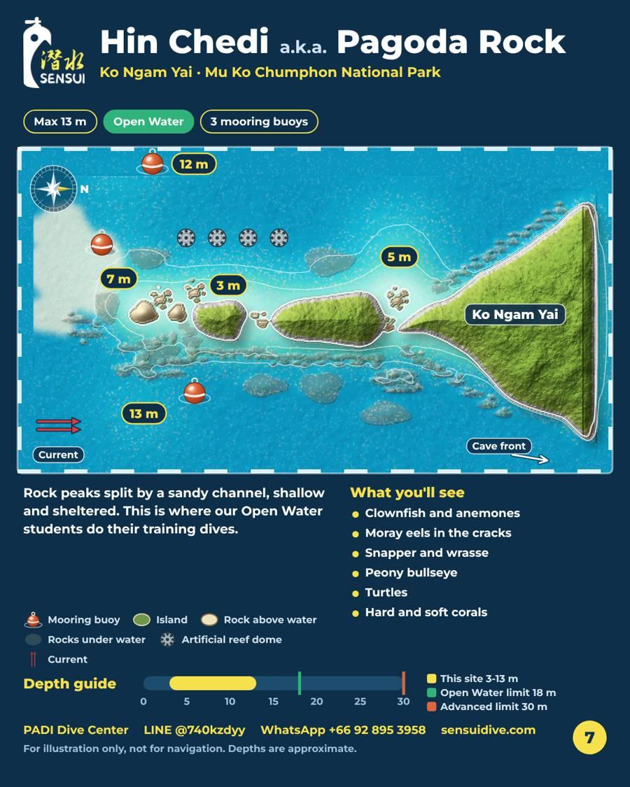

Hin Chedi dive site, Chumphon: map and depths
Depth 3-13 mLevel: Open Water and up3 mooring lines
Rock peaks split by a sandy channel, shallow and sheltered. This is where our Open Water students do their training dives.
What you can see
- Clownfish and anemones
- Moray eels in the cracks
- Snapper and wrasse
- Peony bullseye
- Turtles
- Hard and soft corals
Dive site map

Whale sharks logged here
25 Jun 2025
Our logs show whale sharks from March to October, with the 2025 peak in August-September. Every sighting is a bonus, never a promise.
Open in the Chumphon Guide app ›
Message us to reserve your dates: WhatsApp +66 92 895 3958 · LINE @740kzdyy